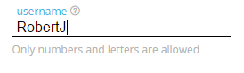

4 Components
4.1 Input
The Input Component includes the different types of HTML inputs like text, number, data, etc.
For more information, visit:
- UX Functional Notes (soon)
- UI Kit implementation
An input in the default state
Label
- Color: a1
- Font-size: body_xxsmall
Input
- Border color: n6
- Border color (on focus): n10
- Color: n10
- Font-size: body_large
Placeholder
- Color: n7
- Font-size: body_xxsmall
An input showing required information
Inputs could have required information needed to keep in mind to be covered. This helpful info will be displayed as is shown below.

Required text
- Color: n5
- Font-size: body_xxsmall
An input showing the help message
Note: Image obsolete. Although in the image, the message box appears at left of the input, it should be placed at bottom, born in the help icon.
Help Message
- Background: n0
- Color: n8
- Font-size: body_xxsmall
- Padding: 10px
An input in a warning state
Warning Message
- Background: s2
- Color: n0
- Font-size: body_xxsmall
- Padding: .5em